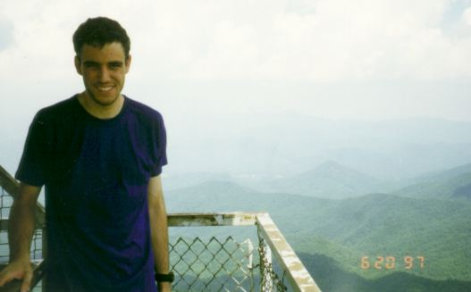
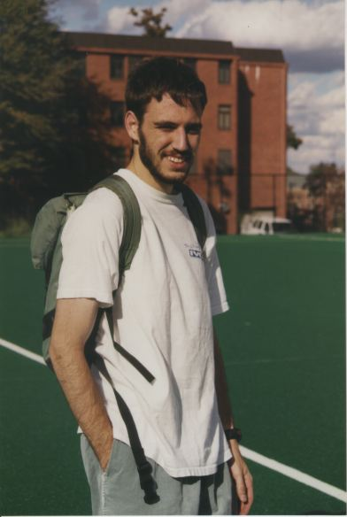
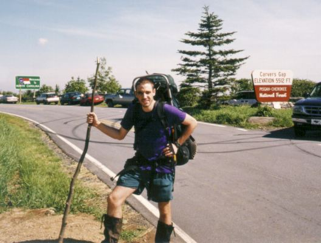
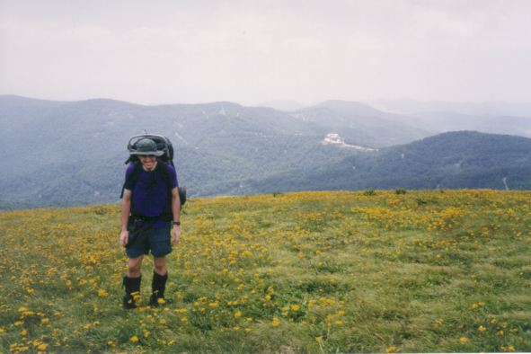

| Home | Statistics | Maps | Churches |
| So then let no one boast in men. For all things belong to you, whether Paul or Apollos or Cephas or the world or life or death or things present or things to come; all things belong to you, and you belong to Christ; and Christ belongs to God. |
| - 1 Corinthians 3:21-23 (NASB) |
Bobby de Vos is an undergraduate studying Computer Engineering at the Georgia Institute of Technology. He has a web page at the College of Engineering, though of course he will not be updating it during the summer.
Last summer,
the Fox, Miller Templeton (whose trail name is NaPensee), and Eric Gregory
prepared for this summer's assault upon the AT
by completing a `shakedown cruise'
down the southermost section of the Trail.
From
The Fox is undertaking the current expedition
in conjunction with Miller Templeton
and Ziad Mohamed, who is replacing Eric.
They began this hike at Davenport Gap -
where they left off last summer -
and should complete their journey at Mount Katahdin in Maine,

In the mountains during the shakedown
cruise last summer.

At Georgia Tech before embarking
on his odyssey.

At Carvers Gap.

In the mountains.